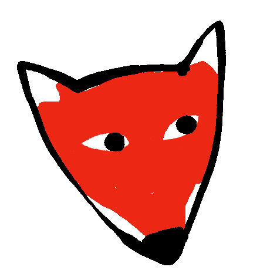
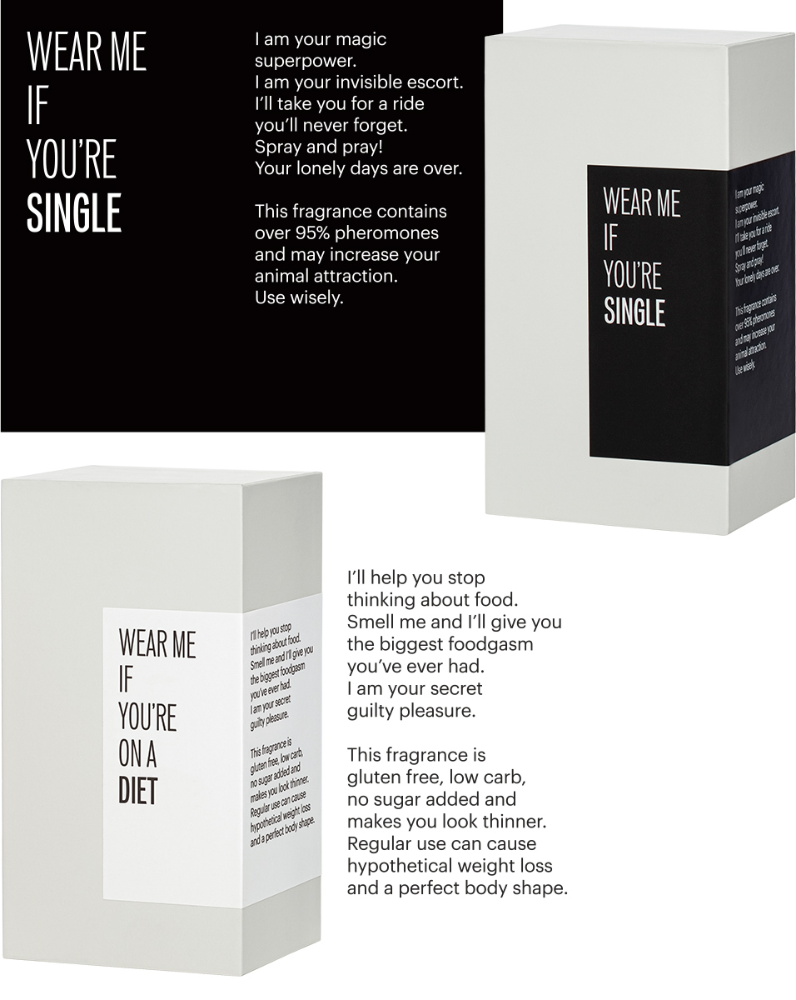
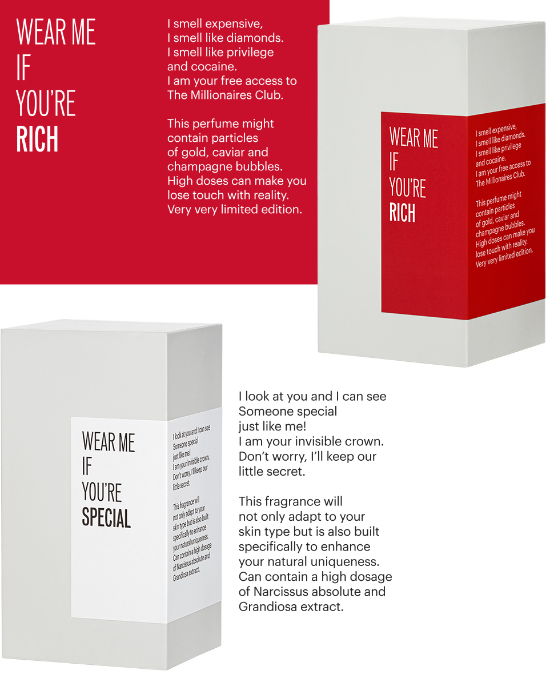
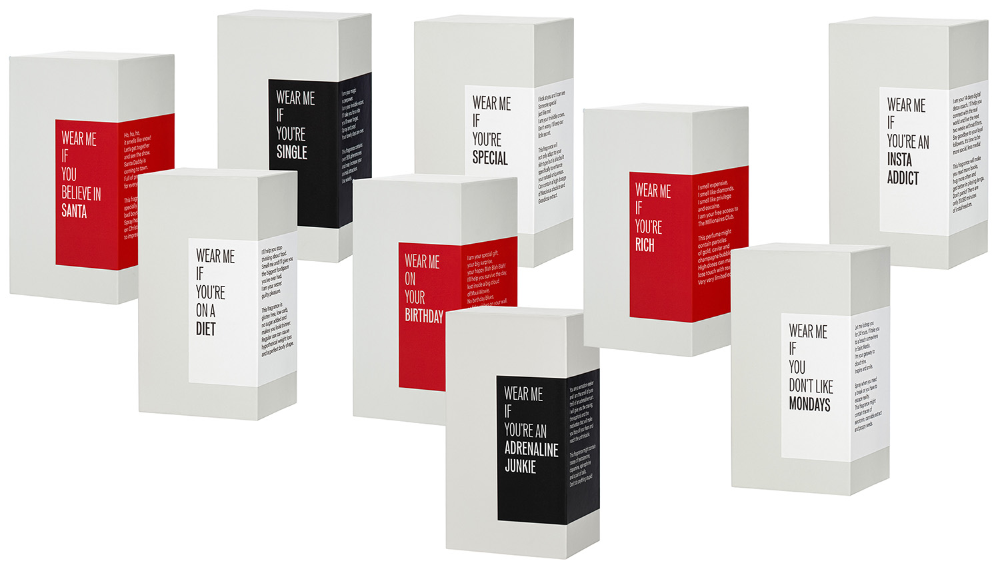

Trust Me I Am A Liar is a new fragrance brand.
Trust Me I'm A Liar is an instore experience, a single perfume with twelve skins: for the people in love, singles, rich or on a diet, Insta addicts, adrenaline junkies, people who don't like Mondays or believe in Santa Claus.
It’s about consumerism. The trick is in the perception one has about oneself. Each description on the box uses the perfumery clichés to push our egos' sensitive buttons. As the creators put it on the label “Trust Me I'm A Liar is an olfactive project based on the power of the placebo effect and positive thinking meant to make people smile”
It's a game. And we played with perception creating a lenticular label.
Country: Romania
Main Activity: Fragrances
Parent Company: Createurs 5 d'Emotions
Niche Designer


